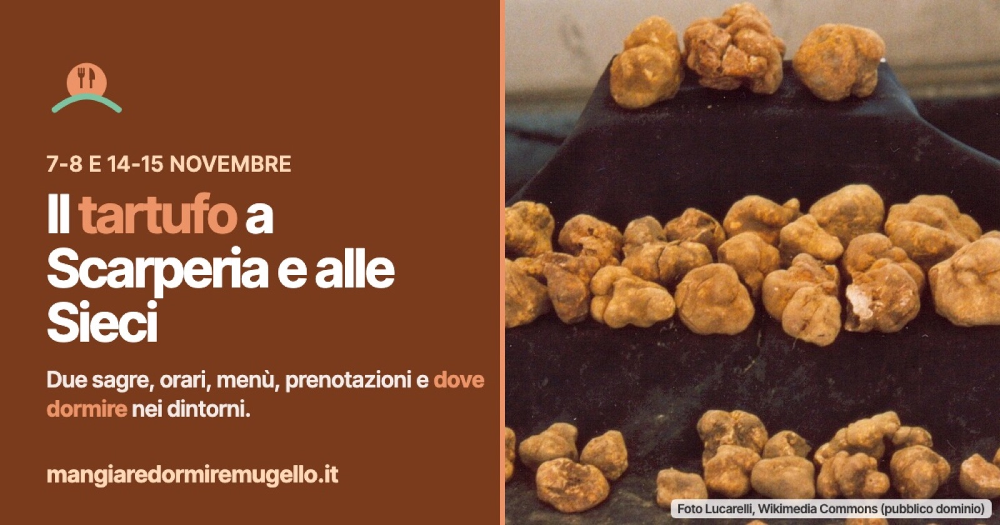

Tartufo a Scarperia e alle Sieci: due sagre per due weekend di novembre
Il 7-8 e il 14-15 novembre il tartufo si mangia al Circolo MCL di Scarperia e alla Croce Azzurra delle Sieci: orari, menù, prenotazioni e dove dormire nei dintorni.

Due paesi, due cucine di volontari e un ingrediente solo. Per due fine settimana di novembre, sabato 7 e domenica 8, poi sabato 14 e domenica 15, il tartufo è il piatto forte a Scarperia, nel Mugello, e alle Sieci, in Val di Sieve.
Scarperia: tartufo bianco, nero e tortello
La sagra si tiene nei locali riscaldati del Circolo MCL di via San Martino 16, organizzata dal circolo insieme alla Parrocchia dei Santi Jacopo e Filippo. Lo stand gastronomico apre il sabato a cena dalle 19, la domenica a pranzo dalle 12 e di nuovo a cena dalle 19.
In tavola tagliolini e tortelli con il tartufo bianco del Mugello, crostoni, uova al tegamino, carni e formaggi locali al tartufo nero, accompagnati dai vini del territorio. Intorno ci sono il mercato dei produttori e dell'artigianato locale, lo show cooking e le dimostrazioni dei tartufai con i cani. Per informazioni: 055 7603226.
La scheda dell'evento: https://mugelloeventi.it/weekend/6-8nov2026/sagra-del-tartufo-bianco-nero-e-tortello/
Sieci: si prenota, e si dà una mano alla Croce Azzurra
Alle Sieci cucinano i volontari della SMS Croce Azzurra, in piazza Sergio Chiari 5, e il ricavato servirà a comprare mezzi per i servizi sociali. Il ristorante apre il sabato a cena, con due turni alle 19:30 e alle 21:15, e la domenica a pranzo, alle 12:30 e alle 14:15.
Nel menù lasagne bianche, tagliolini e tortelli di patate al tartufo, tartare di manzo e uova al forno con il tartufo, sformatino di patate con crema di formaggi al tartufo, e dalla griglia bistecca e tagliata di pollo. La prenotazione è obbligatoria al 334 6648688, dalle 17 alle 19. Nelle vicinanze c'è un parcheggio gratuito.
La scheda dell'evento: https://mugelloeventi.it/weekend/6-8nov2026/festa-delle-specialita-al-tartufo/
Dove dormire e mangiare nei dintorni
Chi vuole fermarsi per la notte trova nel Comune di Scarperia e San Piero 55 strutture per dormire e 27 posti dove mangiare, ognuno con telefono e posizione sulla mappa. A Pontassieve, di cui le Sieci sono frazione, le strutture sono 6 e i locali 7; nel Comune confinante di Pelago se ne contano 12 per dormire e 14 per mangiare.
Dove dormire a Scarperia e San Piero: https://mangiaredormiremugello.it/dove-dormire/scarperia-e-san-piero/
Dove mangiare a Scarperia e San Piero: https://mangiaredormiremugello.it/dove-mangiare/scarperia-e-san-piero/
Dove dormire a Pontassieve: https://mangiaredormiremugello.it/dove-dormire/pontassieve/
Dove mangiare a Pontassieve: https://mangiaredormiremugello.it/dove-mangiare/pontassieve/
Dove dormire a Pelago: https://mangiaredormiremugello.it/dove-dormire/pelago/
Dove mangiare a Pelago: https://mangiaredormiremugello.it/dove-mangiare/pelago/
Orari e menù li decidono gli organizzatori: prima di partire conviene sempre una telefonata.
Fonte: SagreToscane.com, schede delle due sagre (Circolo MCL Scarperia e SMS Croce Azzurra Sieci)